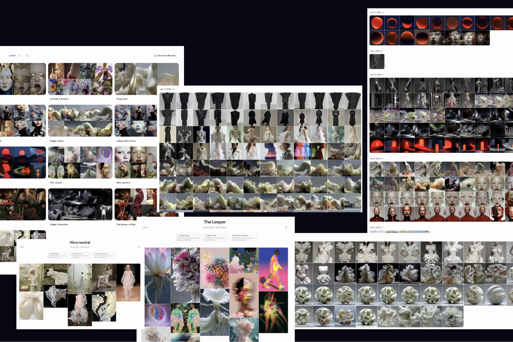
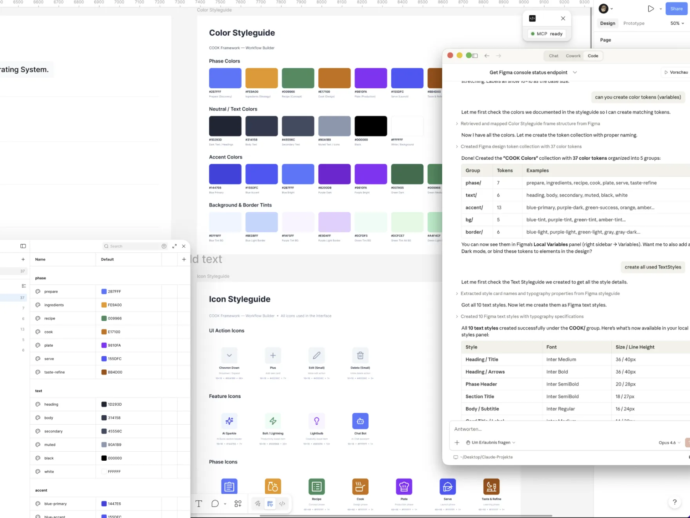
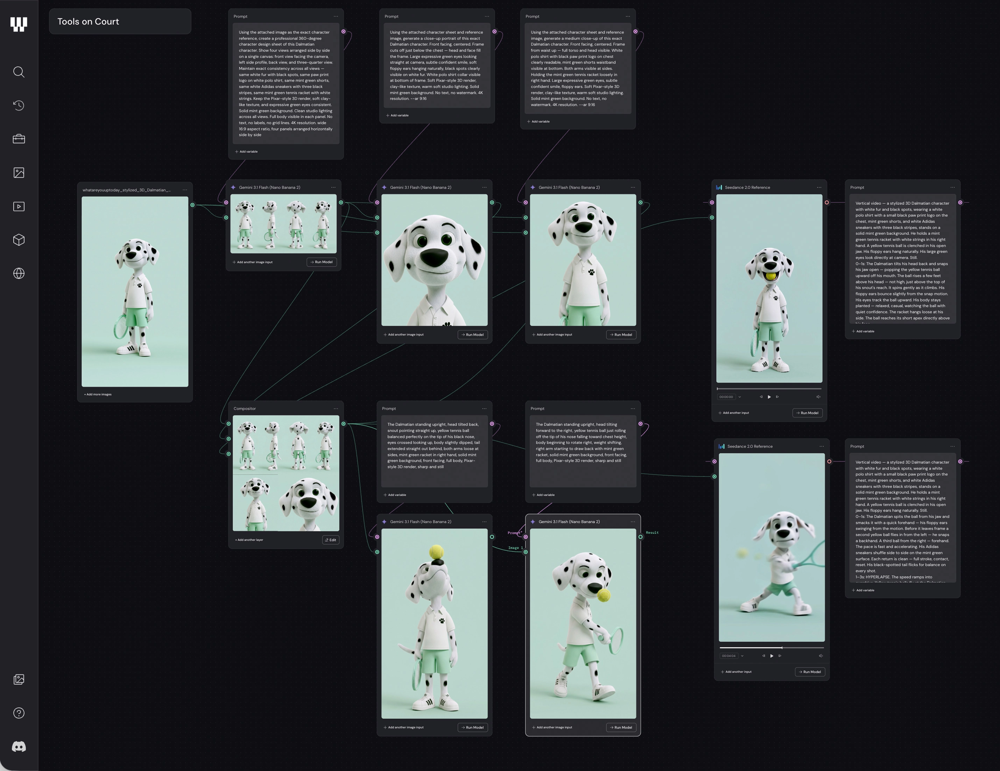

Creative AI Workflows
Creative direction builds stronger systems.
AI can accelerate the creative process, but direction makes it valuable. I design workflows where generative tools support research, exploration, iteration and production, while human taste, strategy and judgement shape the outcome.

Visual exploration and storytelling
A short film built scene by scene through creative direction and AI-assisted writing. I developed the characters, story and worlds first, then used Claude and ChatGPT to write the scenes, and laid out the storyboard in Figma.


From single outputs to connected visual systems.
Node-based workflows turn one creative direction into a coherent set of assets. I chain prompts, models and enhancers in Weavy, where a single character or product produces stills, variations and motion that stay visually consistent across the whole system.
→ Scalable visual asset systems with a documented prompt workflow. Every asset traceable, every decision visible. Clean for clients, clean for compliance.
Where AI helps, phase by phase.
The COOK Framework started as a question about my own workflow: at which phases does AI genuinely support the work, and where does human direction need to lead? I broke my process into phases and tested each one, refining the result into a modular system.
To put it into practice, I prototyped it in Figma Make and connected it to Supabase, so the framework stays editable and expandable. An AI Boost Assistant sits inside each phase, offering prompts and inspiration where AI can actually move the work forward.
Open framework, built to keep evolving with the work.
AI accelerates exploration. Human direction shapes the outcome.
Brand identities and visual systems, led by creative direction, expanded through AI.
Brand & Visual Systems
Explore


Let's shape what's next.
Open for freelance projects, collaborations and AI-native creative systems.